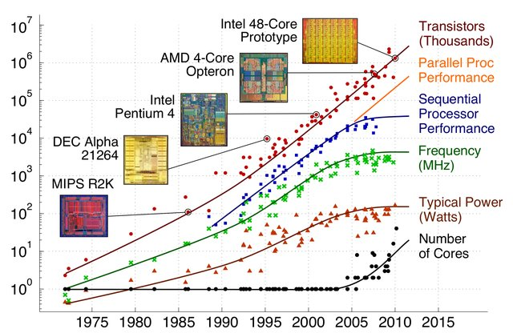
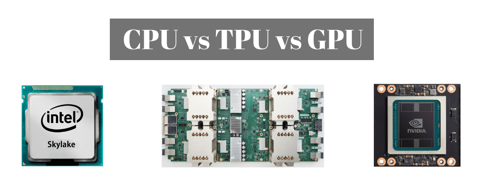

Project Motivation
Taskflow addresses a long-standing problem, how can we make it easier for C++ developers to quickly write parallel and heterogeneous programs with high performance scalability and simultaneous high productivity?
The Era of Multicore
In the past, we embrace free performance scaling on our software thanks to advances in manufacturing technologies and micro-architectural innovations. Approximately for every 1.5 year we can speed up our programs by simply switching to new hardware and compiler vendors that brings 2x more transistors, faster clock rates, and higher instruction-level parallelism. However, this paradigm was challenged by the power wall and increasing difficulties in exploiting instruction-level parallelism. The boost to computing performance has stemmed from changes to multicore chip designs.
The above sweeping visualization (thanks to Prof. Mark Horowitz and his group) shows the evolution of computer architectures is moving toward multicore designs. Today, multicore processors and multiprocessor systems are common in many electronic products such as mobiles, laptops, desktops, and servers. In order to keep up with the performance scaling, it is becoming necessary for software developers to write parallel programs that utilize the number of available cores.
Heterogeneous Computing
With the influence of artificial intelligence (AI) through new and merged workloads, heterogeneous computing becomes demanding and will continue to be heard for years to come. We have not just CPUs but GPUs, TPUs, FPGAs, and ASICs to accelerator a wide variety of scientific computing problems.
The question is: How are we going to program these beasts? Writing a high-performance sequential program is hard. Parallel programming is harder. Parallel programming of heterogeneous devices is extremely challenging if we care about performance and power efficiency. Programming models need to deal with productivity versus performance.
Loop-level Parallelism
The most basic and simplest concept of parallel programming is loop-level parallelism, exploiting parallelism that exists among the iterations of a loop. The program typically partitions a loop of iterations into a set of of blocks, either fixed or dynamic, and run each block in parallel. Below the figure illustrates this pattern.

The main advantage of the loop-based approach is its simplicity in speeding up a regular workload in line with Amdahl's Law. Programmers only need to discover independence of each iteration within a loop and, once possible, the parallel decomposition strategy can be easily implemented. Many existing libraries have built-in support to write a parallel-for loop.
Task-based Parallelism
The traditional loop-level parallelism is simple but hardly allows users to exploit parallelism in more irregular applications such as graph algorithms, incremental flows, recursion, and dynamically-allocated data structures. To address these challenges, parallel programming and libraries are evolving from the tradition loop-based parallelism to the task-based model.
The above figure shows an example task dependency graph. Each node in the graph represents a task unit at function level and each edge indicates the task dependency between a pair of tasks. Task-based model offers a powerful means to express both regular and irregular parallelism in a top-down manner, and provides transparent scaling to large number of cores. In fact, it has been proven, both by the research community and the evolution of parallel programming standards, task-based approach scales the best with future processor generations and architectures.
The Project Mantra
The goal of Taskflow is simple - We help developers quickly write parallel programs with high performance scalability and simultaneous high productivity. We want developers to write simple and effective parallel code, specifically with the following objectives:
- Expressiveness
- Readability
- Transparency
In a nutshell, code written with Taskflow explains itself. The transparency allows developers to focus on the development of application algorithms and parallel decomposition strategies, rather than low-level, system-specific details.